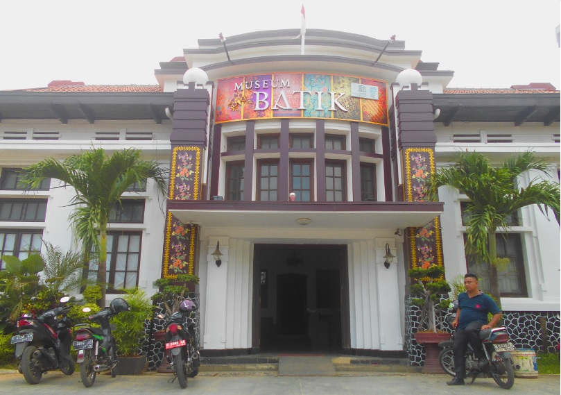
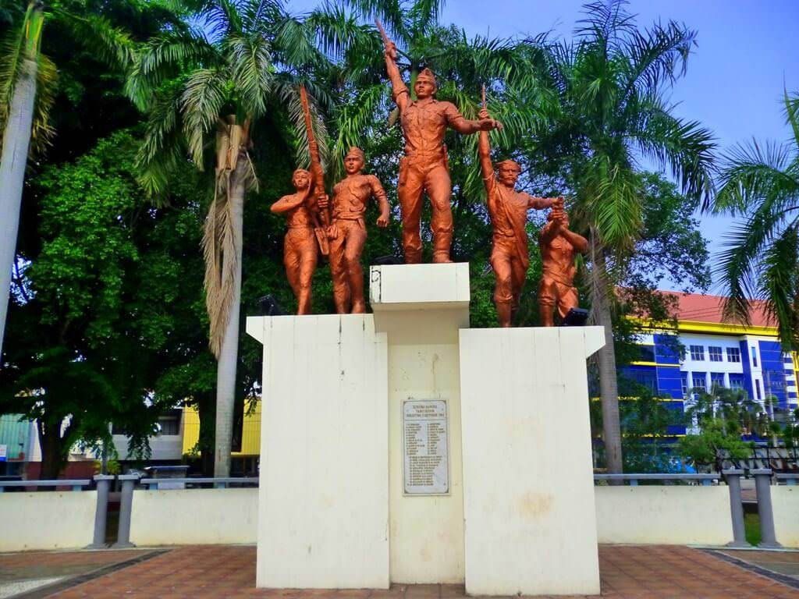
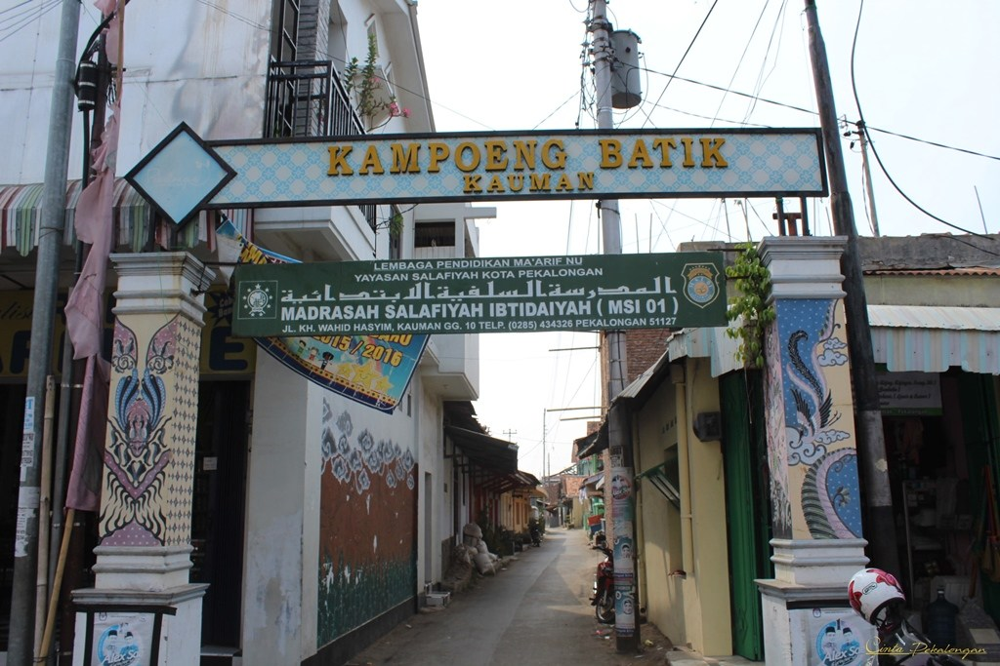

Berikut adalah beberapa wisata edukasi yang ada di pekalongan yang akan kami tampilkan pada web M3Bian. Simak berita selengkapnya hanya di M3Bian.com
Museum Batik Pekalongan
WWWW.M3Bian.Com |
29 Agustus 2019 |
300 Comment

Gambar Museum Batik Pekalongan
Gedung museum ini sebelumnya adalah bekas kantor balai kota Pekalongan, pada masa penjajahan kolonial Belanda gedung tersebut merupakan kantor keuangan yang membawahi tujuh pabrik gula di karesidenan Pekalongan. Pada tahun 1972, terbentuk komunitas bernama Paguyuban Pecinta Batik Pekalongan (PPBP) yang digagas oleh masyarakat dan pembatik Pekalongan. Pada tanggal 29 Desember 2005 diadakan pertemuan forum bisnis Orang Pekalongan (OPEK) yang membahas tawaran Kota Pekalongan sebagai lokasi peringatan hari Koperasi Tingkat Nasional ke-59.
Pembentukan lembaga museum batik melibatkan Yayasan Kadin Indonesia dengan pemerintah Kota Pekalongan, Yayasan Batik Indonesia, Paguyuba Berkah, Yayasan Kadin Kota Pekalongan, Paguyuban Pecinta Batik Pekalongan, serta pakar batik Asmoro Damais yang bersedia menjadi curator museum. Akhirnya pada tanggal 12 Juli 2006 museum ini diresmikan oleh Presiden Republik Indonesia, Susilo Bambang Yudhoyono bersamaan dengan perayaan Hari Koperasi Nasional ke-59. Museum batik ini dijadikan pusat data dan informasi mengenai batik, sebagai pusat riset dan pengembangan ilmu desain batik, perpustakaan dan acuan dalam hal perbatikan; mengkoleksi batik klasik, batik lawasan dan batik kontemporer.
Gambar Museum Batik Pekalongan
MONUMEN JUANG 3 OKTOBER 1945 PEKALONGAN
WWW.M3Bian.Com
29 Agustus 2019
300 Comment

Gambar Monumen Juang 3 Oktober
Hari itu Karesidenan Pekalongan mejadi wilayah pertama di tanah Jawa, bahka di Indonesia yang terbebas dari kekuasaan Jepang. Seluruh serdadu Jepang dari Garnisun Kota serta dari Kempetai bergerak meninggalkan Kota Pekalongan dengan kawalan BKR menuju Purwokerto sebelum dipulangkan melalui pelabuhan Cilacap.
Dari peristiwa berdarah tersebut, Lapangan Kebon Rojo sekarang diubah menjadi Taman Monumen Juang Pekalongan oleh Pemerintah. Dan Gedung Kempetai sekarang menjadi Masjid Syuhada.
Didepan masjid , dulunya terdapat patung berbentuk 4 bambu dengan 5 buah ruas. Namun sekarang diubah menjadi 3 buah bambu dengan 10 bilah ruas yang melambangkan peristiwa berdarah 03 Oktober 1945 di tempat tersebut.
Sejarah monumen 3 Oktober 1945 Pekalongan yang terletak dikebun lapangan rojo adalah untuk mengenang para pahlawan yang gugur dimedan peperangan dalam upaya untuk memindahkan kekuasan dari pasukan Jepang pasca proklamasi kemerdekaan Indonesia pada tanggal 17 Agustus 1945.
Pada saat itu Kota Pekalongan masih berada dibawah pemerintahan Jepang dimana pada saat itu ada tiga kelompok yang melakukan perundingan dan pendekatan untuk upaya pemindahan kekuasan dari pemerintahan Jepang.
Kampung Batik Kauman

Gambar Kampung Batik Kauman
Kampoeng Batik Kauman selama ini lebih dikenal sebagai sentra industri batik yang menghasilkan batik tulis, batik cap dan batik kombinasi keduanya. Belasan pranggok (tempat memproduksi batik) di Kampoeng Batik Kauman telah menghasilkan corak, model dan motif yang beragam.
Kampung Batik merupakan suatu daerah yang penuh dengan toko-toko atau pengrajin batik. Di kampung ini saya juga dapat melihat keberadaan pengrajin yang membuat batik di tempatnya masing-masing. Kawasan ini terletak di perkampungan yang menyatu dengan penduduk. Hampir semua toko tidak dilengkapi pendingin ruangan atau AC. Dengan harga lebih murah daripada mal toko batik lainnya disini saya dapat membeli batik aneka ragam dan bahan dengan kualitas baik. Saya juga bisa menyusuri setiap rumah dengan hanya berjalan kaki.
Menarik sekali menyusuri setiap ruang di kampung batik kauman,,bangunan2 heritage dengan berbagai ruang sebagai tempat produksi dan tempat gallery batik memanjakan mata kita..buat travellers cocok banget jika berkunjung kesini